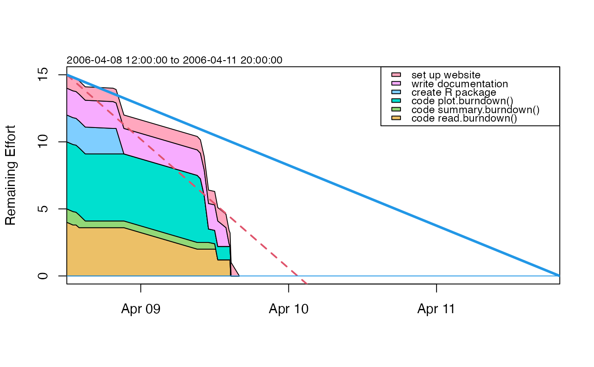

Read a data file containing burndown information.
read.burndown(file, debug = FALSE)a connection or a character string giving the name of the file to load.
boolean, set to TRUE to print debugging information.
A burndown object.
Reads a burndown dataset.
A strict format is required, in which the following items must be present, in the stated order, and with nothing else in the file. An example is given after the description.
Line 1: contains two comma-separated items: the string Start,
and a time expressed in ISO 8601 format (YYYY-MM-DD or
YYY-MM-DD hh:mm:ss). This line indicates the start of the project.
Line 2: as Line 1, but the string is to be Start, and the line
indicates the deadline for the project.
Line 3: a header line for a "tasks" list, comprising the following
three words separated by commas: Key, Description, and
Effort.
Lines 4 to N: data lines, each containing three items: a numeric index
"Key" for the task, a short "Description" of the task, and the estimated
"Effort" for this task, expressed as a number. The keys must be distinct,
and they must match the keys in the progress table (see below). The
description should be short enough to give a reasonable-size legend as
created by plot,burndown-method(). The effort may be expressed in any
convenient unit, e.g. the number of hours or days for the task, or as a
percentage of the overall task.
Line N+1: a header line for the "Progress" list, comprising the
following four words separated by commas: Key, Done, and
Time.
Line N+2 to end: data lines holding Progress items. Each "Key" must match a key in the task list. The "Done" column holds the percentage of the task that has been completed. The "Time" is in ISO 8601 format, as described above.
Start, 2006-04-08 12:00:00
Deadline, 2006-04-11 20:00:00
Key, Description, Effort
1, Code read.burndown(), 4
2, Code summary.burndown(), 1
3, Code plot.burndown(), 5
4, Create R package, 2
5, Write documentation, 2
6, Set up website, 1
Key, Done, Time
1, 5, 2006-04-08 13:00:00
2, 5, 2006-04-08 13:30:00
1, 10, 2006-04-08 14:00:00
2, 50, 2006-04-08 15:00:00
4, 5, 2006-04-08 19:30:00
5, 5, 2006-04-08 20:00:00
4, 100, 2006-04-08 21:16:00
1, 50, 2006-04-09 09:10:00
3, 5, 2006-04-09 09:41:00
3, 30, 2006-04-09 10:18:00
3, 80, 2006-04-09 11:00:00
2, 60, 2006-04-09 12:00:00
2, 100, 2006-04-09 12:10:00
1, 70, 2006-04-09 12:30:00
5, 30, 2006-04-09 13:50:00
5, 90, 2006-04-09 14:20:00
5, 100, 2006-04-09 14:30:00
1, 100, 2006-04-09 14:35:00
3, 100, 2006-04-09 14:40:00
6, 100, 2006-04-09 16:00:00
Other things related to burndown data:
as.burndown(),
burndown-class,
burndown,
plot,burndown-method,
summary,burndown-method
library(plan)
filename <- system.file("extdata", "burndown.dat", package="plan")
b <- read.burndown(filename)
summary(b)
#> Start, 2006-04-08 12:00:00
#> Deadline, 2006-04-11 20:00:00
#> Key, Description, Effort
#> 1, code read.burndown(), 4
#> 2, code summary.burndown(), 1
#> 3, code plot.burndown(), 5
#> 4, create R package, 2
#> 5, write documentation, 2
#> 6, set up website, 1
#> Key, Done, Time
#> 1, 5, 2006-04-08 13:00:00
#> 2, 5, 2006-04-08 13:30:00
#> 1, 10, 2006-04-08 14:00:00
#> 2, 50, 2006-04-08 15:00:00
#> 4, 5, 2006-04-08 19:30:00
#> 5, 5, 2006-04-08 20:00:00
#> 4, 100, 2006-04-08 21:16:00
#> 1, 50, 2006-04-09 09:10:00
#> 3, 5, 2006-04-09 09:41:00
#> 3, 30, 2006-04-09 10:18:00
#> 3, 80, 2006-04-09 11:00:00
#> 2, 60, 2006-04-09 12:00:00
#> 2, 100, 2006-04-09 12:10:00
#> 1, 70, 2006-04-09 12:30:00
#> 5, 30, 2006-04-09 13:50:00
#> 5, 90, 2006-04-09 14:20:00
#> 5, 100, 2006-04-09 14:30:00
#> 1, 100, 2006-04-09 14:35:00
#> 3, 100, 2006-04-09 14:40:00
#> 6, 100, 2006-04-09 16:00:00
plot(b)
